前言
Google 为了帮助 Android 开发者更快更好地开发 App，推出了一系列组件，这些组件被打包成了一个整体，称作Android Jetpack，它包含的组件如下图所示：
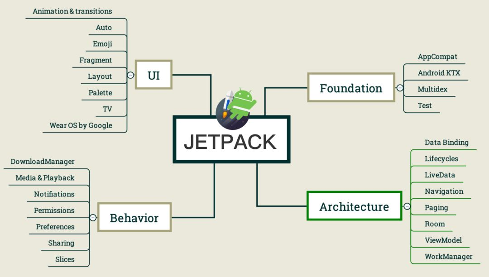
老的 support 包被整合进了 Jetpack，例如上图 Foundation 模块的 AppCompat，整合进去之后，包名做了一下修改，全部以 androidx 开头。Android Studio 提供的迁移工具（Refactor > Migrate to AndroidX）可以将源码中的旧包名替换成新的，但是如果 Maven 依赖的产物还未迁移到 AndroidX的话，还需要配置一个工具—— Jetifier，只需要在 build.gradle 中加上两行配置即可：
1 | android.useAndroidX=true |
Jetfier 会在编译阶段直接修改依赖产物的字节码，简单粗暴。
架构大图
Jetpack 不属于 Android Framework，不是 Android 开发的必需品，它只是应用层开发的一种辅助手段，帮我们解决了一些常见问题，比如版本兼容、API 易用性、生命周期管理等。其中 Architecture 部分的组件（Android Architecture Components，以下简称 AAC）组合起来形成了一套完整的架构解决方案，在没有更好的方案被发明出来之前，我们姑且把 AAC 当做 Android 架构领域的最佳实践，它的出现一定程度上避免了很多不必要的轮子。
官方给出的架构指导非常明确地表达出了每个架构组件的位置：
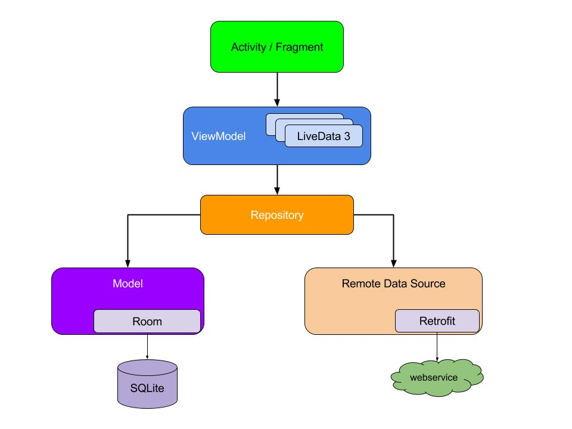
这张图背后隐含了三大设计思想：
- 关注点分离
（SOC / Separation Of Concerns） - 数据驱动UI
（Reactive） - 唯一真相源
（SSOC / Single Source Of Truth）
SOC 具体到工程实践中就是分层合理，单层的职责越明确，对上下游的依赖越清晰就意味着它的结构更稳定，也
更可测（testable）。一个 App 从全局来看，可以划分为三部分：首先是 UI Controller 层，包含 Activity 和 Fragment；其次是 ViewModel 层，既可以做 MVVM 的 VM、MVP 的 P，也可以做 UI 的数据适配，这一层可以实现数据驱动 UI；最后是 Repository 层，它作为 SSOC，是一个 Facade 模式，对上层屏蔽了数据的来源，可以来自 local，也是来自 remote，数据持久化策略向上透明。
一张架构蓝图，三大设计原则，接下来深入细节，看看组件之间如何配合才能实现这个架构。
Lifecycle
与 React/Vue 或者 iOS 相比，Android 的生命周期都比较复杂，如果要监听生命周期，一般情况下只能覆写 Activity / Fragment 的回调方法（onCreate、onResume、onPause、onDestroy 等），样板代码少不了，可维护性也变差。
如果要对生命周期进行简化，可以抽象成一个图，点表示状态，线表示事件：
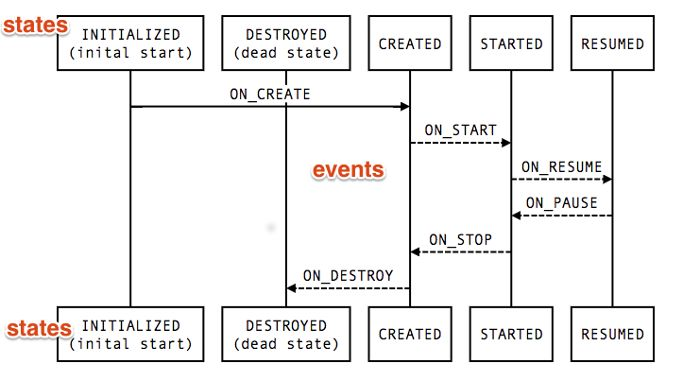
Lifecycle 负责处理这些点（states）和线（events），Activity / Fragment 是 LifecycleOwner，监听者则是 LifecycleObserver，一个非常清晰的观察者模式。
1 | class MyObserver : LifecycleObserver { |
如果我们的组件需要强绑定声明周期，那么只需要借助 Lifecycle 去监听生命周期的状态和事件即可，再也不用覆写各种回调方法了。下面将要讲到的 LiveData 和 ViewModel 都是 Lifecycle-Aware Components，它们都用到了 Lifecycle。
Android 生命周期管理不当带来的最大问题就是内存泄露，举一个我们经常遇到的场景：一个异步任务（比如网络请求）持有了 UI 元素的引用，只要任务没有执行完，所有与这个 UI 元素有强引用关系的元素都没法被 GC，如果这样的场景多发生几次，很可能会引起 OOM。
为了异步对象引用的问题，最早我们使用 AsyncTask，任务执行在 worker thread，执行结果在主线程上发起回调。AsyncTask 的致命缺点是不支持流式数据（stream），而且回调嵌套太深（callback hell），与软件质量衡量指标之一的 maintainable 背道而驰，不好用自然就会慢慢被淘汰。
后来我们开始使用 RxJava，响应式编程，声明式写法，再借助 retrolambda 这种 backport，即使当年 Android 只支持到 JDK7，我们依然可以利用各种 operator 写出非常简洁的代码，“filter map 我闭~着眼”。RxJava 不但完美解决了线程调度的问题，还为我们提供了 OO 之外的抽象——作用在流上的 lambda，基于函数的抽象。但是，即便完美如斯，生命周期的问题依然无法回避，因为 Java 天生的局限性，一个 lambda 无论伪造地再像高阶函数，它本质上还是一个匿名内部类，这个匿名内部类依然持有对 outer class 实例的引用。于是我们必须通过 CompositeDisposable 来管理订阅关系，发起异步操作时记录订阅，离开页面时取消订阅，仍然需要覆写 onDestory 或者 onPause 。
如果我们以 Repository 层为界把架构蓝图分为上下两部分的话，上面的部分是数据展示，下面的部分是数据获取，数据获取部分因为要请求 Remote 数据，必然会依赖到线程调度，而数据展示必然运行在 UI 线程，与生命周期强相关，这个时候就需要 LiveData 登场了。
LiveData
LiveData 也是一个观察者模型，但是它是一个与 Lifecycle 绑定了的 Subject，也就是说，只有当 UI 组件处于 ACTIVE 状态时，它的 Observer 才能收到消息，否则会自动切断订阅关系，不用再像 RxJava 那样通过 CompositeDisposable 来手动处理。
LiveData 的数据类似 EventBus 的 sticky event，不会被消费掉，只要有数据，它的 observer 就会收到通知。如果我们要把 LiveData 用作事件总线，还需要做一些定制，Github 上搜 SingleLiveEvent 可以找到源码实现。
我们没法直接修改 LiveData 的 value，因为它是不可变的（immutable），可变（mutable）版本是 MutableLiveData，通过调用 setValue（主线程）或 postValue（非主线程）可以修改它的 value。如果我们对外暴露一个 LiveData，但是不希望外部可以改变它的值，可以用如下技巧实现：
1 | private val _waveCode = MutableLiveData<String>() |
内部用 MutableLiveData ，可以修改值，对外暴露成 LiveData 类型，只能获取值，不能修改值
LiveData 有一个实现了中介者模式的子类 —— MediatorLiveData，它可以把多个 LiveData 整合成一个，只要任何一个 LiveData 有数据变化，它的观察者就会收到消息：
1 | val liveData1 = ... |
综上，我们汇总一下 LiveData 的使用场景：
- LiveData - immutable 版本
- MutableLiveData - mutable 版本
- MediatorLiveData - 可汇总多个数据源
- SingleLiveEvent - 事件总线
LiveData 只存储最新的数据，虽然用法类似 RxJava2 的 Flowable，但是它不支持背压（backpressure），所以不是一个流（stream），利用 LiveDataReactiveStreams 我们可以实现 Flowable 和 LiveData 的互换。
如果把异步获取到的数据封装成 Flowable，通过 toLiveData 方法转换成 LiveData，既利用了 RxJava 的线程模型，还消除了 Flowable 与 UI Controller 生命周期的耦合关系，借助 Data Binding 再把 LiveData 绑定到 xml UI 元素上，数据驱动 UI，妥妥的响应式。于是一幅如下模样的数据流向图就被勾勒了出来：
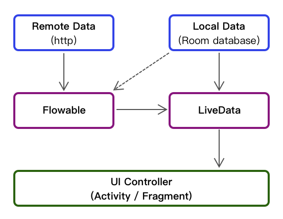
图中右上角的 Local Data 是 AAC 提供的另一个强大武器 —— ORM 框架 Room。
Room
数据库作为数据持久层，其重要性不言而喻，当设备处于离线状态时，数据库可用于缓存数据；当多个 App 需要共享数据时，数据库可以作为数据源，但是基于原生 API 徒手写 CRUD 实在是痛苦，虽然 Github 上出现了不少 ORM 框架，但是它们的易用性也不敢让人恭维，直到 Room 出来之后，Android 程序员终于可以像 mybatis 那样轻松地操纵数据库了。
Room 是 SQLite 之上的应用抽象层，而 SQLite 是一个位于 Android Framework 层的内存型数据库。虽然 Realm 也是一个优秀的数据库，但是它并没有内置于 Android 系统，所会增大 apk 的体积，使用 Room 则没有这方面烦恼。
Room 的结构抽象得非常简单，数据对象（表名 + 字段）用 @Entity 注解来定义，数据访问用 @Dao 来注解，db 本身则用 @Database 来定义，如果要支持复杂类型，可以定义 @TypeConverters，然后在编译阶段，apt 会根据这些注解生成代码。Room 与 App 其他部分的交互如下图所示：
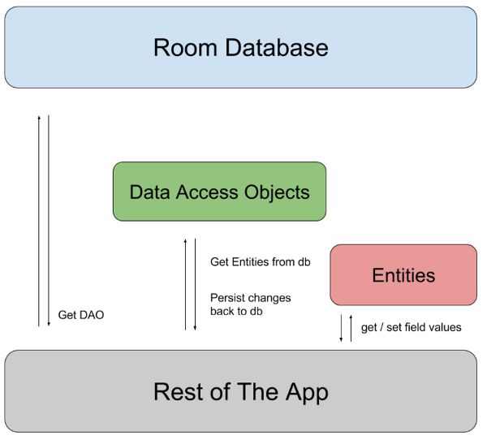
Entity 是一个数据实体，表示一条记录，它的用法如下：
1 |
|
Actor 是一个用 @Entity 注解的 data class，它会生成一个名字是 actors 的表，注意到有一个字段是 @Date? ，但是 SQLite 本身不支持这种复杂类型（complex type），所以我们还需要写一个可以转换成基础类型的转换器：
1 | class Converters { |
转换器通过 @TypeConverters 可作用于 class、field、method、parameter，分别代表不同的作用域。比如作用在 @Database 类的上，那么它的作用域就是 db 中出现的所有 @Dao 和 @Entity。
1 |
|
@Query 中的 SQL 语句可以直接引用方法参数，而且它的返回值可以是 LiveData 类型，也支持 Flowable 类型，也就是说，Room 原生支持响应式，这是对数据驱动最有利的支持，也是 Room 区别于其他 ORM 框架的显著特征。
至此，我们可以确定，无论数据来自 Remote 还是来自本地 DB，架构蓝图中的 Repository 对 ViewModel 提供的数据可以永远是 LiveData 类型，接下来我们看一下 ViewModel 的妙用。
ViewModel
ViewModel 是一个多面手，因为它的生命周期比较长，可以跨越因为配置变动（configuration changed，比如屏幕翻转）引起的 Activity 重建，因此 ViewModel 不能持有对 Activity / Fragment 的引用。
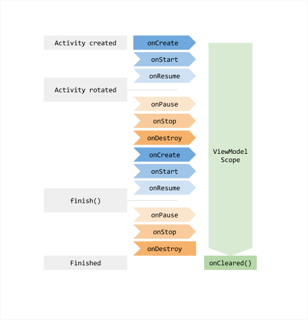
如果 ViewModel 中要用到 context 怎么办呢？没关系，框架提供了一个 ViewModel 的子类 AndroidViewModel ，它在构造时需要传入 Application 实例。
既然 ViewModel 与 UI Controller 无关，当然可以用作 MVP 的 Presenter 层提供 LiveData 给 View 层，因为 LiveData 绑定了 Lifecycle，所以不存在内存泄露的问题。除此之外，ViewModel 也可以用做 MVVM 模式的 VM 层，利用 Data Binding 直接把 ViewModel 的 LiveData 属性绑定到 xml 元素上，xml 中声明式的写法避免了很多样板代码，数据驱动 UI 的最后一步，我们只需要关注数据的变化即可，UI 的状态会自动发生变化。
ViewModel 配合 Data Binding 的用法与 React 非常相似，ViewModel 实例相当于 state，xml 文件就好比 render 函数，只要 state 数据发生变化，render 就会重新渲染 UI，但是 data binding 还有更强大的一点，它支持双向绑定。举个例子，UI 需要展示一个评论框，允许展示评论，也允许用户修改，那么我们可以直接把 EditText 双向绑定到一个 LiveData 之上，只要用户有输入，我们就可以收到通知，完全不需要通过 Kotlin/Java 来操控 UI：
1 | <TextInputEditText |
注意，如果要在 xml 中使用 LiveData，需要把 lifecycle owner 赋给 binding：
1 | val binding: MainBinding = DataBindingUtil.setContentView(this, R.layout.main) |
因为 ViewModel 拿到的数据是 Repository 给的，可能不适用于 UI 元素，所以 ViewModel 还承担了数据适配的工作，有时候我们需要汇总 repository 的多个返回值一次性给到 UI，那么就可以使用 LiveData 的“操作符” Transformations.switchMap，用法可以认为等同于 Rx 的 flatMap；如果只想对 LiveData 的 value 做一些映射，可以使用 Transformations.map，目前 Transformations 只有这两个操作符，因为不管 Kotlin 还是 Java8，都提供了很多声明式的操作符，对流的支持都比较友好，而 LiveData本身不是一个流，所以这两个操作符足矣。
除了数据适配之外，ViewModel 还有一个强大的用法 —— Fragment 之间共享数据，这样 ViewModel 又扮演了 FLUX 模式中的 store 这一角色，是多个页面（fragment）之间唯一的数据出口。
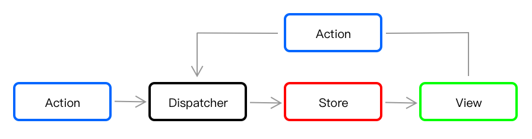
ViewModel 的用法也非常简单，通过 ViewModelProviders.of 可以获取 ViewModel 实例：
1 | val viewModel = ViewModelProviders.of(requireActivity(), factory) |
一通操作猛如虎之后，UI controller 层变得薄如蝉翼，它只做了一件事情，把数据从左手（ViewModel）倒给了右手（使用了 Data Binding 的 xml）。
如果把 ViewModel 作为 SSOC（唯一真相源），多个 Fragment 之间共享数据，再利用 SingleLiveEvent 做总线，一个 Activity 配多个 Fragment 的写法就避免了 Activity 之间通过 Intent 传递数据的繁琐。但是 Fragment 的堆栈管理一直是一个让人头疼的问题，AAC 的 Navigation 不但完美解决了这个问题，而且还提供可视化的路由，只需拖拽一下就能生成类型安全的跳转逻辑。
Navigation
Navigation 用一个图（graph）来表示页面间的路由关系，图的节点（node）表示页面，边（edge）表示跳转关系。例如下图 8 个页面的跳转关系，一目了然：
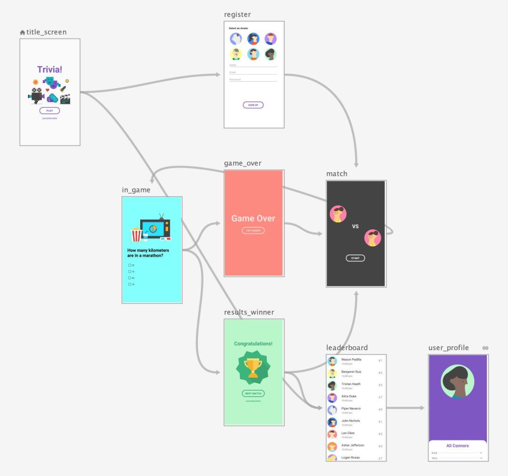
页面与页面之间的连线叫 action，它可以配置进离场动画（Animations），也可以配置出栈行为（Pop Behavior），还支持 Single Top 的启动选项（Launch Options）。进离场动画和启动选项很好理解，出栈行为是一个比较强大的功能，action 箭头所指的方向表示目标页面入栈，箭头的反方向则表示目标页面出栈，而出栈的行为在 Navigation 编辑器中完全可控，我们可以指定要出栈到哪个页面，甚至可以指定目标页面是否也需要出栈：
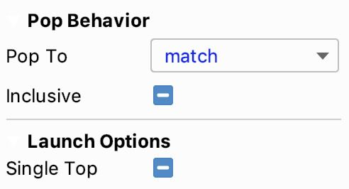
针对页面节点，还可以定义它要接收的参数（arguments），支持默认值，从此 Fragment 之间的参数传递变得非常直观，非常安全。
看一下具体用法，首先在跳转发起页面，通过 apt 生成的跳转函数传入参数：
1 | val actorId = getSelectedActorId() |
然后利用目标页面生成的 *Args 获取参数：
1 | 然后利用目标页面生成的 *Args 获取参数： |
这里的 navArgs 是一个扩展函数，利用了 Kotlin 的 ReadWriteProperty。
几行代码就搞定了页面之间的跳转，而且还是可视化！从没有想过 Android 的页面跳转竟会变得如何简单，但是 Navigation 的方案并不是原创，iOS 的 Storyboard 很早就支持拖拽生成路由。当年 Android 推出 ConstraintLayout 之时，我们都认为是参考了 Storyboard 的页面拖拽，现在再配上 Navigation，从页面到跳转，一个完整的拖拽链路就形成了。平台虽然有差异化，但是使用场景一致的前提下，解决方案也就殊途同归了。
了解完了与生命周期有关的组件，接下来我们来看细节。
Paging
UI 没有办法一次性展示所有的数据，端上的系统资源（电量、内存）也有限制，不可能把所有数据都加载到内存中；而且大批量请求数据不但浪费带宽，在某些网络情况（弱网、慢网）下还会导致请求失败，所以分页是很多情景下的刚需。Github 上有各式各样的解决方案，这一次，Google 直接推出了官方的分页组件——Paging。
Paging 将分页逻辑拆解为三部分：
- 数据源
DataSource - 数据块
PagedList - 数据展示
PagedListAdapter
DataSource 的数据来源于后端服务或者本地数据库，并且用三个子类来表示三种分页模式：
- PageKeyedDataSource - 单页数据以 page key 为标识，例如当前页的 Response 中包含了下一页的 url，这个 url 就是 page key。
- ItemKeyedDataSource - 单页数据以 item key 为标识，比如下一页的请求要带当前页最后一个 item 的 id，这个 itemId 就是 item key。
- PositionalDataSource - 单页数据以位置为标识，这种模式比较常见，Room 只支持这一种，因为数据库查询以 OFFSET 和 LIMIT 做分页。
PageKeyedDataSource 和 ItemKeyedDataSource 适用于内存型数据，比如直接从后端获取后需要展示的数据。PositionalDataSource 适用于本地 Room 数据或者使用 Room 做缓存的 Cache 数据。
数据流向的关系图如下所示：
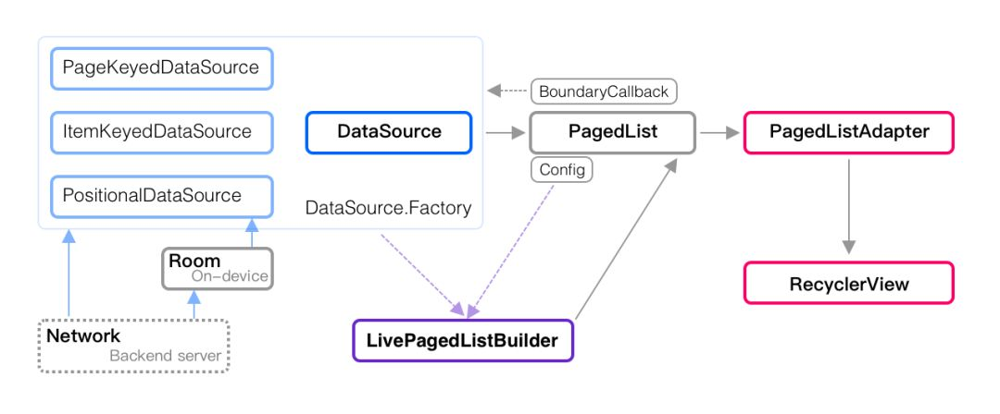
LivePagedListBuilder利用DataSource.Factory和PageList.Config创建LiveData，UI Controller拿到数据之后交给PagedListAdapter展示到RecyclerView。
上图表达了数据的流向，如果从 UI 层往回看，页面展示的数据存储在 PagedList 中，PagedList 只是 DataSource 的数据块（chunk），当 PagedList 需要更多数据时，DataSource 就会给更多，当 DataSource 一无所有时便会触发 BoundaryCallback 获取更多数据，直到数据全部展示完毕。
LivePagedListBuilder 会将 PagedList 包装成 LiveData<PagedList> 给到下游，它在整个数据交互链路中的位置如下图所示：
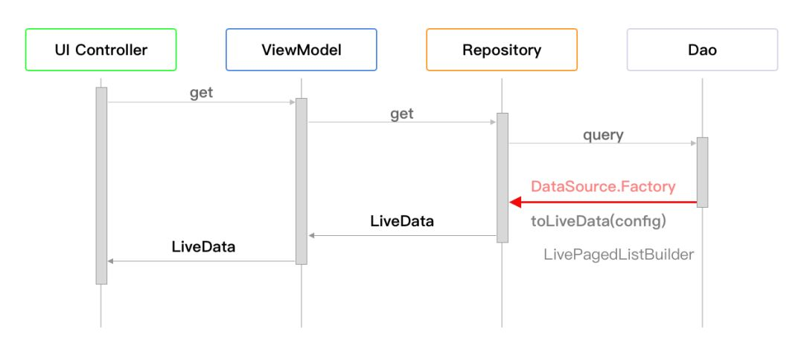
Repository 拿到 Dao 的 DataSource.Factory 之后，调用它的 toLiveData 方法并传入 PagedList.Config，然后生成一个分页的 LiveData
交给 ViewModel 层。
Paging 加上生命周期相关的架构组件解决了数据存储、数据流转和数据展示的问题。除此之外，AAC 还包括一个强大的异步任务执行器 WorkManager，它解决了任务执行的 可靠性，无论 App 退出还是设备重启，交给 WorkerManager 的任务都会被执行。
WorkManager
WorkManager 虽然解决了任务执行可靠性的问题，但是它无法精确控制任务的执行时间，因为 WorkManager 要根据 OS 资源来选择执行任务。Android 自身提供了很多方案来解决后台任务执行的问题，可以根据下图的决策路径选择不同的组件：
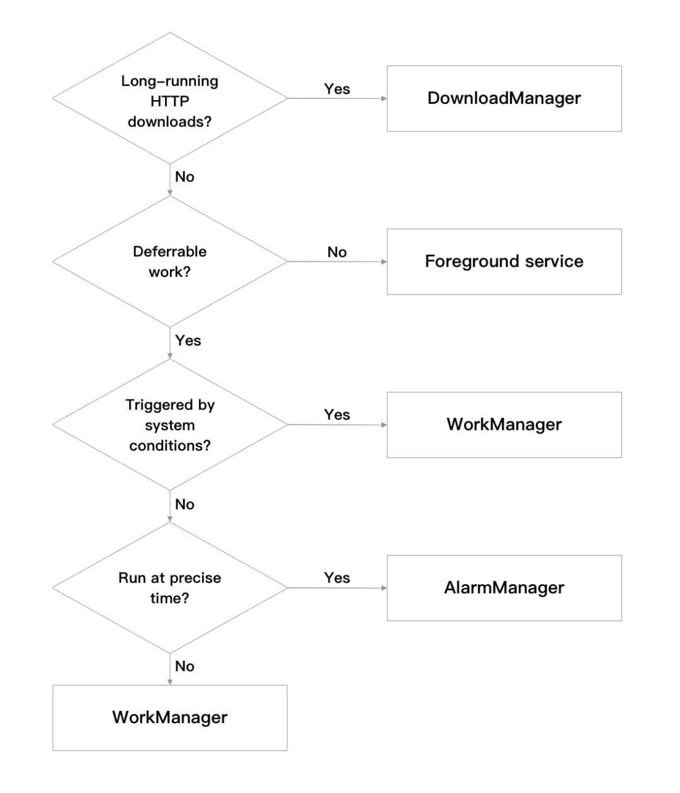
WorkManager 整体上可分为四部分：任务类型、任务构建、任务监控和任务控制。
一、任务类型
WorkManager 提供了一次性任务和周期性任务两种任务类型：
- OneTimeWorkRequest —— 一次性任务
- PeriodicTimeWorkRequest —— 周期性任务
二、任务构建
一是执行条件，二是执行顺序。
Constraints—— 通过Constraints.Builder构建任务执行的条件（网络类型、电量、设备空间等）- WorkContinuation —— 可以指定任务的执行顺序，例如可以按照 PERT 图的顺序执行任务：
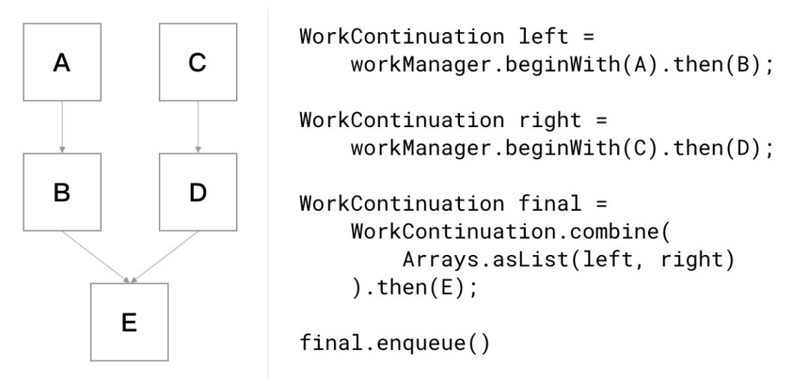
三、任务监控
通过回调来获知任务的当前状态：
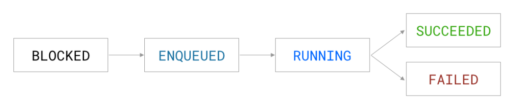
四、任务控制
包括加入队列，取消任务，其中 UniqueWork 提供了多种加入队列的策略（REPLACE、KEEP、APPEND）：
- cancelWorkById(UUID) —— 通过 ID 取消单个任务
- cancelAllWorkByTag(String) —— 通过 Tag 取消所有任务
- cancelUniqueWork(String) —— 通过名字取消唯一任务
除此之外，WorkerManager 还提供了四种不同线程模型的 Worker：
- Worker —— 基于默认后台线程
- CoroutineWorker —— 基于 Kotlin 的协程
- RxWorker —— 基于 RxJava2
- ListenableWorker —— 基于回调的异步
总结
Google 官方架构组件 AAC 为我们提供了太多通用问题的解决方案，使用场景包括数据持久化、异步任务调度、生命周期管理，UI 分页、UI 导航，当然还有强大的 MVVM 框架 Data Binding，这些架构组件不但使代码变得清晰易读，而且独立于 Android SDK 向下兼容，AAC 使我们更加聚焦产品，专注于解决问题，而不是花太多的时间重复造轮子。
资料
https://developer.android.google.cn/jetpack/androidx/migrate
https://developer.android.google.cn/jetpack/